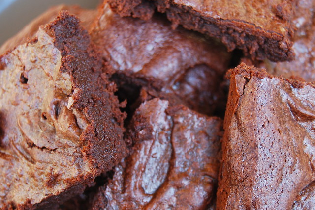

3-Step Brownies

Very quick and easy soft and gooey chocolate brownies.
Ingredients
150g (10 tablespoons) Unsalted Butter
300g (1 1/4 cups) Caster Sugar (Granulated if you are in the USA)
110g (3/4 cups plus 2 tbsp) Cocoa Powder
1/4 tsp Salt
1/2 tsp Vanilla Extract
2 Eggs, straight from the fridge
120g (1/2 cup) Plain (All Purpose) Flour
Steps
- Heat your oven to 160 degrees (325 Fahrenheit). Place the butter, sugar, salt and cocoa powder in a medium to large heatproof bowl. A big pyrex mixing bowl is perfect for this; I am rather lost at the moment without the one in my mothers kitchen. They also cost about £6, and last literally forever unless you drop it. Place the bowl over a saucepan of hot water, simmering but not boiling so the bottom of the bowl is not sitting in water. Gradually stir every few minutes until the butter has melted and everything is combined. The mixture should be smooth, but slightly gritty. Set aside, off the water to cool.
- Line a 8 inch square tin with foil or good quality baking parchment while the mixture cools a little. Alternatively you can buy a disposable foil brownie tray. Beat in the vanilla extract with a balloon whisk followed by the eggs one at a time until the mixture is smooth.
- Beat in the flour until the mixture is smooth and slightly glossy. Pour into the tin and bake on the bottom half of the oven for 20 minutes. Allow to cool and remove the foil and slice the brownies into 16 squares once completely cool.